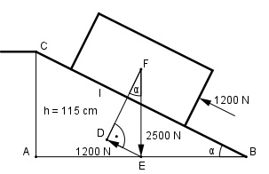

e>Aufgabe 71 2 Arbeiter, die eine Kraft von je 600 N aufbringen können, sollen einKlavier mit einer Gewichtskraft von 2 500 N über eine Rampe auf einen Lkw rollen, dessen Ladefläche 1,15 m hoch ist. Unter welchem Winkel α muss die Rampe angelegt werden? Welche Länge l in cm muss sie haben?

Im Dreieck DEF: 1 200 N sin α= ----------- = 0,48 --> α = 28,7° 2 500 N Im Dreieck ABC: h sin α= --- |*l l l * sin α = h |:sin α h 115 cm l = ------- = ---------- = 239,5 cm sin α 0,4802